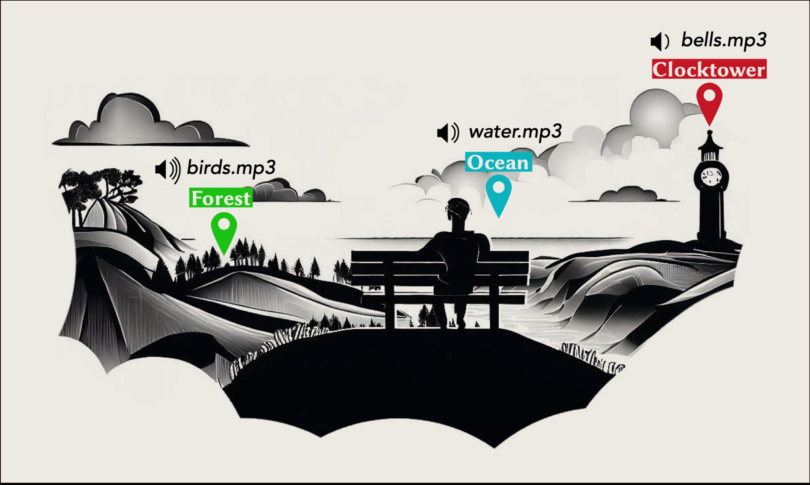
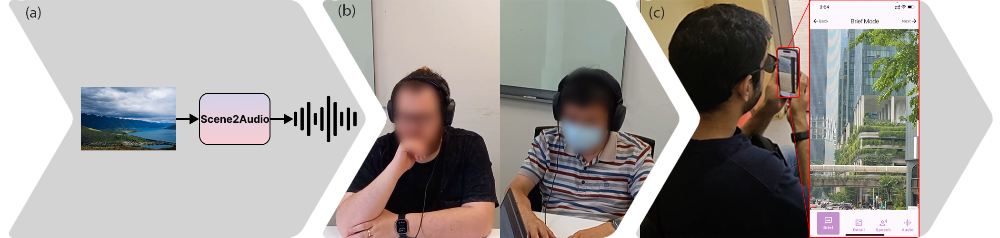

Scene-to-Audio (SonicVista)
Distant scene sonification for blind and low-vision users via generative audio compositions.

Problem
For blind and low-vision (BLV) people, accessing information about distant visual scenes — panoramic landscapes, cityscapes, public squares — remains a significant challenge. Existing assistive technologies such as screen readers and image-description tools typically describe near-field objects or provide text summaries, but they fail to convey the rich spatial, temporal, and atmospheric qualities of a scene the way sighted people experience it.
A person standing at the edge of a hilltop, or on a harbour promenade, or in a busy plaza should be able to experience what is in front of them — not just receive a list of detected objects. Text descriptions and speech output are cognitively demanding to process and do not provide an intuitive, immediate sense of space and ambience.
Our Approach
We developed SonicVista and its generalised successor framework Scene2Audio, which convert visual scene images captured from a wearable camera into immersive audio compositions. The system analyses the scene using computer vision to identify objects, their positions, distances, and the overall scene context, then uses generative audio models to synthesise and mix a soundscape that corresponds to the visual content.
For example, if the scene shows a coastal vista with seagulls in the distance, crashing waves to the left, and a distant city skyline, the generated audio composition would layer ambient sea sounds, bird calls, and subtle urban ambience — giving the user an intuitive, rich sense of what lies ahead. The approach moves beyond description to experience, leveraging the brain's ability to interpret audio as a natural representation of space.
SonicVista was published in ACM IMWUT (2024), and the follow-on Scene2Audio framework demonstrated broader generalisability and was accepted to ACM CHI 2026. An extended abstract presenting early user study results appeared at CHI 2025.

SonicVista system architecture converting visual scenes to audio

Overview of user studies conducted for the Scene-to-Audio system
Related Publications
-
Beyond Descriptions: A Generative Scene2Audio Framework for Blind and Low-Vision Users to Experience Vista LandscapesACM CHI 2026
-
ACM CHI 2025 — Extended Abstract
-
Proceedings of the ACM on Interactive, Mobile, Wearable and Ubiquitous Technologies (IMWUT), 2024
-
ACM CHI 2025